La galaxie de Solana est l'univers fictif dans lequel se déroule la majeure partie des aventures de Ratchet & Clank. Cette galaxie est peuplée d'une grande variété de planètes, chacune ayant ses propres caractéristiques, cultures et formes de vie. Parmi les planètes les plus connues de cette galaxie, on trouve:
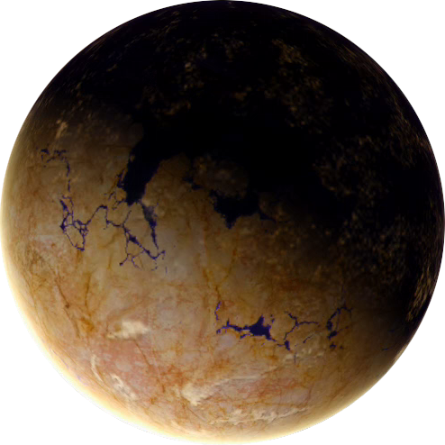Veldin : la planète natale de Ratchet, principalement une planète désertique avec des ruines antiques et des créatures dangereuses.
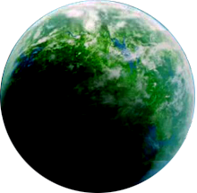Kerwan : une planète avancée et urbaine avec des gratte-ciel, des autoroutes et des industries de haute technologie.
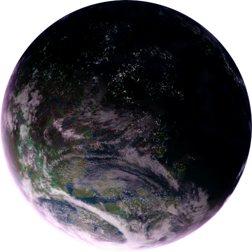Rilgar : une planète de la galaxie de Solana. C'est une planète où il pleut souvent et qui est connue pour son parc d'attractions, "Blackwater City". La planète est également le lieu de résidence de "Al", un vendeur d'armes qui aide Ratchet dans sa quête.
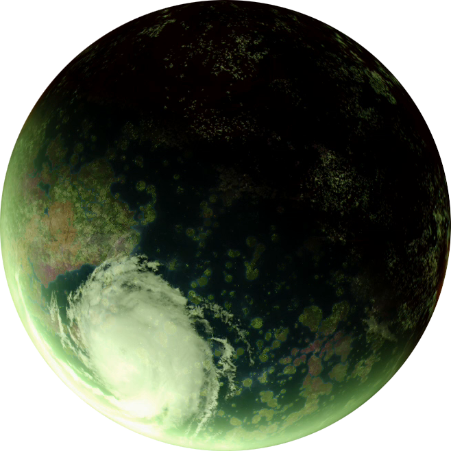Quartu : la planète d'origine des robots, où Clank a été créé. C'est une planète industrielle avec des usines de robotique et des environnements dangereux.
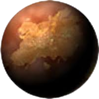Marcadia : une planète luxuriante avec des jungles, des cascades et des villes flottantes.
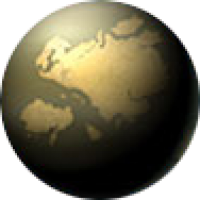Florana : une planète jungle recouverte de végétation dense, d'espèces animales colorées et de tribus indigènes.
Ces planètes sont souvent le théâtre de batailles épiques entre les héros de l'histoire et les antagonistes, créant un univers riche et varié pour les joueurs à explorer.
Endako : une planète industrielle avec des usines, des mines et des ports spatiaux.
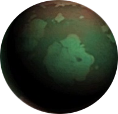: une planète jungle avec une faune et une flore diversifiées.
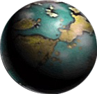Joba : une planète désertique avec des mines d'énergie et des ruines anciennes.
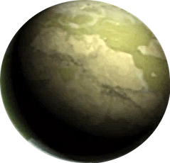Boldan : une planète océanique avec des villes flottantes et des fonds marins dangereux.
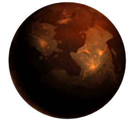Snivelak : une planète glaciaire avec des usines de robots, des mines et des bases militaires.
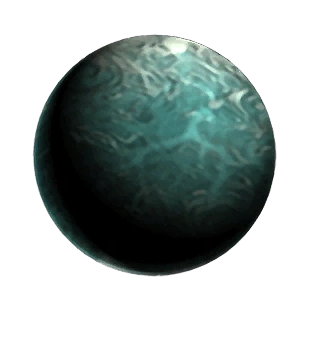Damosel : une planète océanique avec une ville portuaire nommée "Jowai Resort", une destination touristique.
Ces planètes sont souvent le théâtre de batailles épiques entre les héros de l'histoire et les antagonistes, créant un univers riche et varié pour les joueurs à explorer.
La galaxie de Polaris est une autre galaxie fictive de l'univers de Ratchet & Clank, présentée dans le jeu Ratchet & Clank: A Crack in Time. Elle est considérée comme la plus éloignée de la galaxie de Solana et est connue pour être le foyer de plusieurs civilisations avancées. Parmi les planètes les plus connues de la galaxie de Polaris, on trouve:
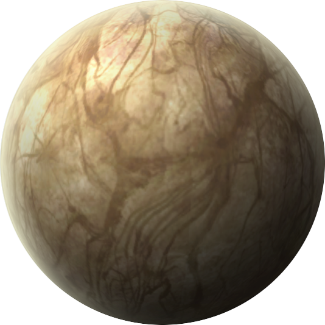la planète d'origine de Ratchet, détruite par le général Azimuth avant le début de l'histoire.
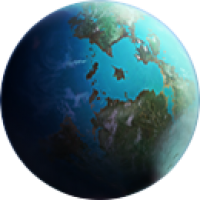une planète tropicale avec des ruines anciennes et des temples.
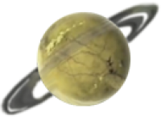une planète glacée avec des villes construites sur les montagnes et des forteresses militaires.
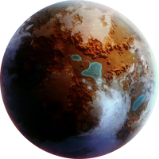une planète de cristal avec des cavernes souterraines et une lumière éblouissante.
une planète désertique avec des usines de robots et des villes construites autour d'une énergie mystérieuse.
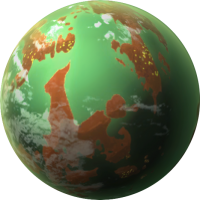une planète de Ratchet & Clank: Rift Apart couverte de débris spatiaux et habitée par les Zoni.
Comme dans les autres galaxies de la série, chaque planète de Polaris a son propre environnement unique et ses propres défis à surmonter. La galaxie de Polaris est également connue pour être le théâtre d'un conflit entre les forces de Clank et les ennemis de la race des Zoni, qui cherchent à manipuler le temps et l'espace pour leur propre bénéfice.